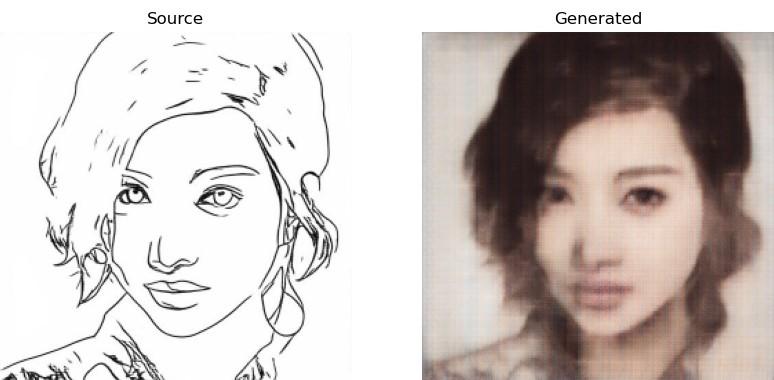
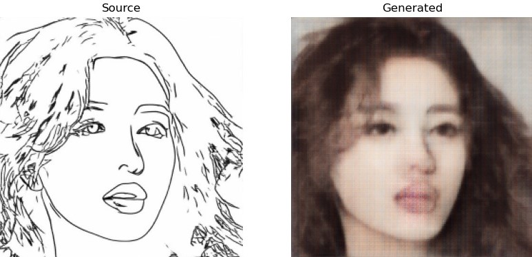
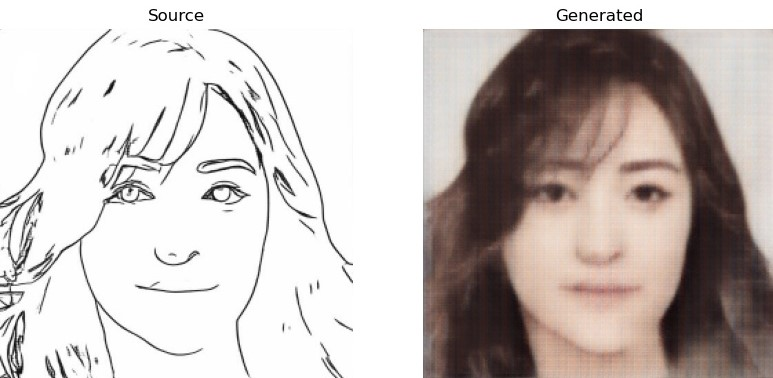

{% extends 'layout.html' %}
{% block ourpage %}
Sketch Face Recognition
via
Generative Adversarial Network
Introduction:
Face sketch-photo transformation has broad applications in forensics, law enforcement, and digital entertainment,
particular for face recognition systems that are designed for
photo-to-photo matching. While there are a number of methods
for face photo-to-sketch transformation, studies on sketch-to-photo transformation remain limited. The generated face photos are used, as a replacement
of face sketches, and particularly for face identification against
a gallery set of mugshot photos. Experimental results show that the proposed
approach is able to generate realistic photos from sketches,
and the generated photos are instrumental in improving the
sketch identification accuracy against a large gallery set.
Some Examples:



{% endblock %}